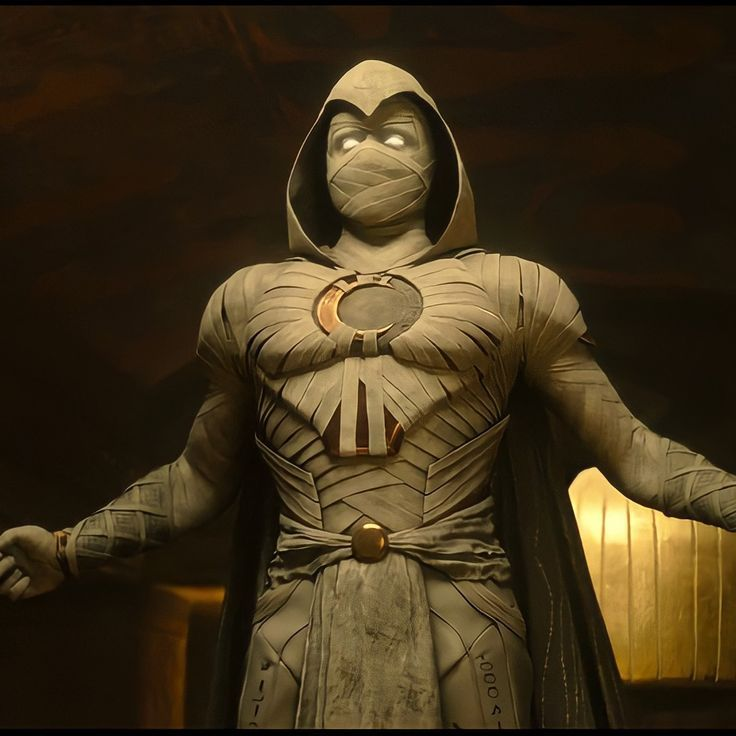
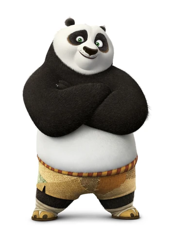

MOON KNIGHT
Behold Moon Knight—the Fist of Khonshu. He doesn't wear white to hide; he wears it so his enemies see him coming. A fractured soul bound to an ancient Egyptian Moon God, he is a ghostly specter of vengeance who turns his shattered mind into a lethal weapon.
He is a man of many faces—the brutal mercenary Marc Spector, the refined Mr. Knight, and the unassuming Steven Grant. Together, they haunt the night with crescent-shaped blades and a suit that bleeds supernatural power, proving that even a broken man can be a god's greatest warrior.
Beyond the brutal combat, Moon Knight’s true power is his unpredictability. Because his mind is a kaleidoscope of different identities, no telepath can read him and no strategist can anticipate his next move. He isn’t just a hero, he’s a living myth wrapped in white linen,to ensure that those who prey on the innocent fear the light of the moon.
PO
 Meet Po—a clumsy, noodle-obsessed giant panda who dreams of becoming a legendary martial arts master. Living in the Valley of Peace, his life changes forever when he is unexpectedly chosen by Grand Master Oogway as the Dragon Warrior, much to the shock of his idolized peers, the Furious Five.
His journey is one of self-discovery and resilience. Initially dismissed by Master Shifu for his lack of skill, Po discovers that his perceived weaknesses—like his bulk and his love for food—are actually his greatest strengths. He learns that there is no "secret ingredient" to greatness; one only needs to believe in themselves to unlock their true potential.